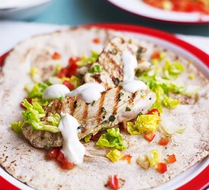

Lemon & yogurt chicken flatbreads

Ready Lemon & yogurt chicken flatbreads
Make these family-friendly chicken wraps with lemon,
garlic and cinnamon marinade on a barbecue if the sun is shining.
Serve in flatbreads with yoghurt Healthy
Ingredients
- 2 skinless chicken breasts cut into strips
- 1 lemon
- 1 tsp dried oregano(optional)
- 1 garlic clove crushed
- pinch of cinnamon
- 1 tbsp olive oil
- 4 flatbreads
- 4 tbsp Greek yogurt
- ¼ red pepper finely chopped
- 1 Little Gem lettuce finely chopped
Steps to prepare/Method
Step 1
- Put the chicken in a bowl
- Pare strips of zest from the lemon using a vegetable peeler,then juice the lemon too.
- Add the peel and half the juice to the chicken, along with the oregano (if using), garlic, cinnamon and oil.
- Mix well, cover and chill for an hour.The lemon juice will start to ‘cook’ the chicken, so don’t leave for longer.
Step 2
- Heat the barbecue. If you are using coals, wait until they turn white. If you are indoors,heat a griddle pan.
- Thread the chicken strips onto a couple of metal skewers to stop them falling
through the grate (you don’t need to do this for the griddle)
- Then grill for a couple of mins each side.
- The strips will cook through quickly so don’t leave them too long. Season if you like.
Step 3
- Warm the flatbreads on the edge of the barbecue (or on the griddle) for a minute,
- then transfer them to plates and spread each with ½ tbsp yogurt.
- Divide the chicken strips between them, then dot on the remaining yogurt and sprinkle over the pepper and lettuce.
- Fold or roll the flatbreads to eat.
Home